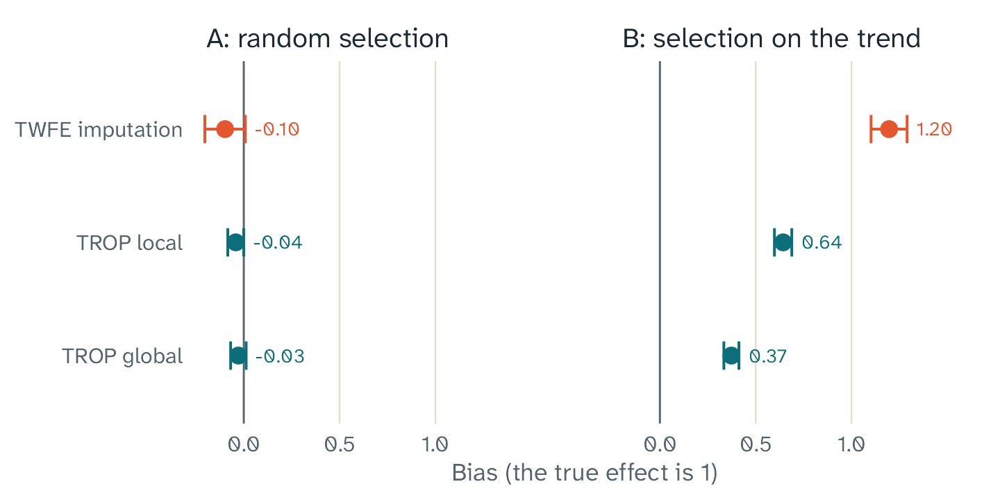

Key points
- The authors suggest TROP or synthetic difference in differences as a simple choice for panel data. No method works for every data set.
- The triple robustness result has a proof only for a block design.
- The bootstrap interval is reliable only with many treated units.
- In our simulation with larger trends for the treated units, TROP reduced the bias, but some bias stayed.
- In our simulation of a staggered design with larger trends for the treated units, TROP reduced the bias by 20%. A large bias stayed.
- fasttrop cannot use covariates.
What TROP can do
- Estimate the average treatment effect on the treated (ATT) for block, staggered, and general designs, with the local method.
- Use panels in which some outcomes are not in the data. The fits do not use these cells.
- Adapt to the data. Cross-validation uses the data to set the tuning parameters. They control the unit weights, the time weights, and the low-rank term.
- Give a standard error and a confidence interval with a unit bootstrap.
The limits of the method
The triple robustness result has a proof only for a block design
The paper gives a limit on the bias of TROP (Theorem 5.1). This limit is the reason for the name “triply robust”. The proof is only for a block design, in which all treated units start the treatment in the same period and stay treated.
fasttrop also calculates estimates for staggered and general designs, but it gives a warning message. For these designs, the estimate is available, but the triple robustness result has no proof. The proof also uses fixed weights, and TROP selects its weights from the data.
The bootstrap interval is reliable only with many treated units
The paper says that its bootstrap is correct only with many treated units. fasttrop gives a warning message for a panel with fewer than five treated units. Five or more treated units do not make the interval reliable. With one or two treated units, for example one state with a new law, the interval can be wrong.
In our simulation A, a random draw selected 10 treated units. The normal intervals of TROP had a coverage of 92.5% to 94%, near the target of 95%. In simulation B, the selection used the trend of the units. There, the same intervals had a coverage of only 47.5% to 70%.
fasttrop also keeps the tuning parameters fixed in the bootstrap. Thus, the interval does not include the variation that comes from the selection of the tuning parameters.
Different trends can leave some bias
TROP calculates the outcomes without the treatment from the untreated cells. In our simulation B, the selection favored units with larger trends. TROP reduced the bias, but some bias stayed. This result gives no general rule about which weights can remove a bias. Under the assumptions of the paper, a model without bias can also remove it.
In simulation A, a random draw selects the treated units. In simulation B, the selection favors the units with the largest trends. The true effect is 1 in both simulations.

Bias of three estimators, with 200 simulated panels in each simulation. In simulation A, a random draw selects the treated units. In simulation B, the selection favors the units with the largest trends. The bars show two Monte Carlo standard errors.
In simulation A, each bias is small, and each one is less than three Monte Carlo standard errors from zero. In simulation B, TWFE imputation has a large bias. TROP removes approximately half of this bias with the local method and two thirds with the global method, but some bias stays. The intervals in simulation B also have a coverage below 95%. The article How we checked fasttrop shows the saved results for TWFE imputation and the two TROP methods.
In a staggered design, we have simulations but no proof
In a staggered design, the treated units start the treatment in different periods. The paper on TROP has no proof for this design. We made three simulations with a staggered design to see how fasttrop works. The article How we checked fasttrop has the details.
Hull (2026) compares a conventional TWFE regression with two modern estimators in real studies. In a staggered design, the regression can give negative weights to some effects. TWFE imputation, the special case of TROP in fasttrop, gives the weight 1 to each treated cell. The study does not examine TROP.
In simulation D, the effects differ between the cohorts, and the trends are parallel. The bias of the regression was -0.36. Its 95% interval contained the true effect in 0 of the 200 panels. TWFE imputation and TROP local had biases of -0.005 and -0.006. Their intervals contained the true effect in 96.0% to 98.5% of the panels.
When the trends are parallel, TROP had no gain over TWFE imputation. In simulations C and D, the RMSE of TROP local was 4% larger than the RMSE of TWFE imputation.
In simulation E, the effects are the same as in simulation D, but the trends are not parallel. The units with larger trends start the treatment first. TWFE imputation had a bias of 1.26, and TROP local had a bias of 1.01. The true effect was 1. The bias of TROP local was 20% smaller than the bias of TWFE imputation, but a large bias stayed. The intervals of both methods contained the true effect in at most 1 of the 200 panels.
In simulation E, the regression had the smallest bias, 0.22. This result does not show an advantage of the regression. Its bias in simulation D was -0.36, and its weights are the same in simulation E. Thus, the errors from the weights and from the trends have opposite signs, and they partly cancel.
These simulations use 60 units, four cohorts, and one tuning grid. We did not compare TROP with other modern estimators for a staggered design.
General designs assume no carryover
In a general design, the treatment stops for some units. The estimator then uses the cells after the treatment as untreated cells. This is correct only if the treatment has no effect after it stops. The estimator also assumes that the effect does not change with the earlier treatment periods. fasttrop gives a warning message for a general design.
Assumptions in the paper
The paper assumes no spillovers and no dynamic effects. TROP uses the cells of the treated units before the treatment as untreated cells. Thus, the treatment must not change outcomes before it starts. The treatment of one unit also must not change the outcomes of other units. Outcomes can still change over time for other reasons.
The limits of this package
These limits apply to fasttrop 0.1.0:
- The package cannot use covariates.
- The global method works only for a block design, and it must have at least two units that are never treated.
- Outcomes can be
NA, but the tests for the tuning and for the bootstrap use only a small number ofNAcells. - The equations come from arXiv version 3 of the paper. A line-by-line comparison with the journal version is not complete.
- Our simulations with a staggered design have 60 units, four cohorts, and one tuning grid. We did not compare TROP with other modern estimators on real data.
- We ran the validation scripts and the benchmark scripts only on
Windows. GitHub Actions runs
R CMD checkon Linux, macOS, and Windows.
Good practice
- Make simulations that copy your data, and compare the methods on
them. This is the preferred approach of the authors of TROP. The
function
trop_simulate()makes a simple panel. For a real check, the simulation must copy the patterns of your own data. - Compare TROP with TWFE imputation. The article How to read your results shows how.
- In a staggered design, also compare TROP with a modern estimator from another package. Hull (2026) recommends this comparison for each application. fasttrop does not have an estimator that averages the DiD estimates of each cohort and period.
- Make sure that the design that fasttrop reports is the design that you expect.
- Use enough bootstrap draws for the final result. The default is 200.
- Report the method, the tuning parameters, the number of treated units, the number of bootstrap draws, and the type of interval.
- With few treated units, use the interval with care, and say so in your report.